Republic of Equatorial Guinea
 |
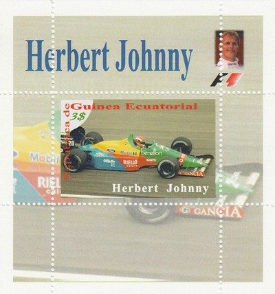 Issue date: Unknown Johnny Herbert drove in F1 off and on from 1989 to 2000, starting out with Benetton and Tyrrell. He then did a 4 year stint with Lotus, before moving back to Benetton via Ligier (for one race), after that Herbert moved to Sauber for 3 years, Stewart for 1 year and finally Jaguar for 1 year. Herbert achieved only 3 race victories: 1995 British and Italian Grand Prix (Benetton) and 1999 European Grand Prix which was held at Nurburgring (Stewart). During the mid-1980s, Johnny Herbert was widely regarded as a coming man of motor racing, comparable to the Scot Jim Clark. Disaster struck in 1988, though, as Herbert, then a championship hopeful in International Formula 3000 was caught up in a major accident at Brands Hatch, badly breaking his legs in a fearsome impact with the barriers. It was an act of huge bravery that saw him back in a racing car at the beginning of 1989, despite the fact he could barely walk. 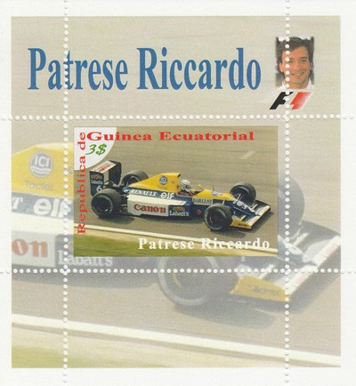 Issue date: Unknown Ricardo Patrese drove for Williams from 1987 (just the final race, replacing the injured Mansell) to 1992; in that time he was runner up in 1992 and third place in 1989 and 1991 in the drivers championship. Williams dominated F1 in 1992 and Patrese continued to deliver in his role of second driver to Nigel Mansell, moving out of the way for Mansell while leading comfortably at that year's French Grand Prix. Patrese took a single win at the Japanese Grand Prix and had eight other podium finishes, including six second-place results. With Alain Prost, Ayrton Senna and Nigel Mansell all desperately trying to sign for Williams, Patrese's position looked to be under threat and he signed for Benetton before the end of the year. Ironically, only Prost was able to agree terms with Williams for 1993, leaving a seat free for Patrese had he remained with the team. 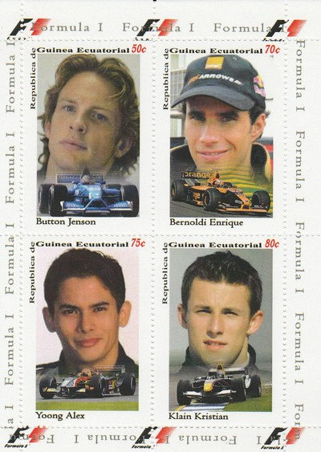 Issue date: Unknown Jenson Button 'won' his race seat with Williams at the end of 1999; he drove for Williams in 2000, before moving to Benetton for 2001 and 2002 and then BAR Honda in 2003 (in 2007 this became the Honda team). The elusive first win came at the Hungarian grand prix in 2006 in the wet. At the end of 2008 Honda pulled out of F1 and the team became Brawn GP in 2009 following a management buyout - after years of having uncompetitive cars the Brawn BGP001 won 6 of the first 7 races and took Button to a well deserved drivers title and handed Brawn GP the constructors title. Enrique Bernoldi is a Brazilian racing driver who drove for Arrows in 2001 and 2002 without much success. Alex Yoong drove for Minardi in 2001 and 2002; he was the first Malaysian F1 driver but never achieved much success. Christian Klien drove for Jaguar in 2004 and then Red Bull (which took over Jaguar) in 2005 and 2006; in 2007 he was test/reserve driver for Honda and in 2008 and 2009 he was test/reserve driver for BMW. He never achieved much success in F1. 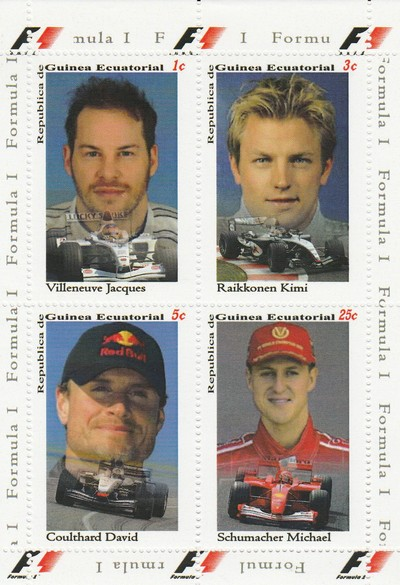 Issue date: Unknown Jacques Villeneuve won the drivers championship in 1997 in his second year in F1 (and his second year with Williams) in the FW19. After a third year with Williams he moved to BAR for the next 5 years, but achieved little success. In 2004 he drove a few races for Renault, before switching to Sauber for 2005 and 2006. Kimi Raikkonen drove for McLaren from 2002 to 2006; in that time he was runner up twice in the drivers championship. Raikkonen is known to be very calm, cool, and calculating in his race strategy - prompting the nickname "Iceman", which is subtly written on the side of his current helmet design. Raikkonen was always known to be extremely fast but his infamous technical failures did not bring the results that he deserved. Approximately 38% of his races during his 5 years with McLaren ended with retirement because of one technical failure or the other. David Coulthard drove for McLaren from 1996 to 2004; in that time he was runner up once and third place three times in the drivers championship. Coulthard amassed a notable points haul placing him seventh on the all-time scorers list, being the top British scorer, in an F1 career spanning 15 seasons with Williams, McLaren and Red Bull Racing. Michael Schumacher and Ferrari - enough said. 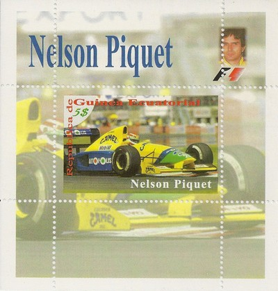 Issue date: Unknown A single value sheetlet featuring Nelson Piquet. Piquet drove in F1 from 1978 to 1991, winning the drivers' championship on 1981 (Parmalat Racing Team, Brabham BT49C), 1983 (Fila Sport, Brabham BT52) and 1987 (Williams FW11B). In 1983, he became the only driver to win the F1 championship in a BMW engined car. 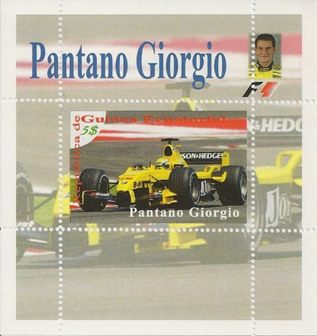 Issue date: Unknown Single value sheetlet featuring Giorgio Pantano. Pantano drove in F1 for the Jordan team in 2004 (driving the EJ14), he never achieved any success in F1 and so was replaced after just one season in F1. 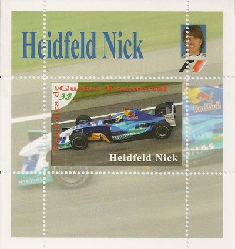 Issue date: Unknown Single value sheetlet featuring Nick Heidfeld. Heidfeld drove in F1 from 2000 to 2011 - despite scoring regular podium finishes in 2007 and 2008, Heidfeld has yet to win a race since entering F1 in 2000, this means that he has had the most GP starts without standing at the top spot on the podium - Heidfeld has started over 170 races - Heidfeld also currently holds three other records; he is the driver who has scored the highest number of world championship points without a Grand Prix win, holds the record for the most podium finishes without a Grand Prix win and has the most second place finishes without a win, with 8 - he also holds the record for the most consecutive race classifications with a tally of 41, and shares the record for most finishes in a season with Tiago Monteiro and Felipe Massa after finishing all 18 races in the 2008 season. 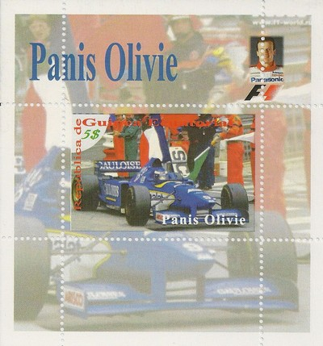 Issue date: Unknown Single value sheetlet featuring Olivier Panis. Panis drove in F1 from 1994 to 2004 (but not in 2000) for Ligier, Prost, BAR Honda and Toyota - he scored one win at the eventful Monaco Grand Prix in 1996 for the Ligier team after starting 14th. To date, he is the last French driver to win a F1 Grand Prix. 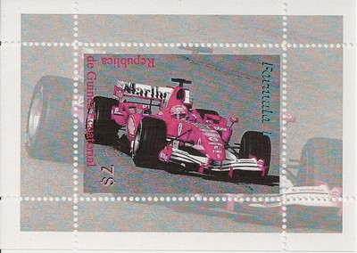 Issue date: Unknown A series of single value mini sheets showing F1 cars, including Ferrari, Williams, McLaren and Honda. 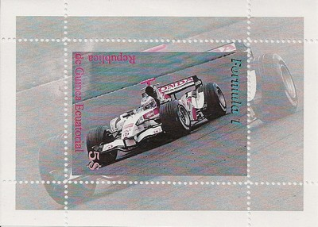 Issue date: Unknown A series of single value mini sheets showing F1 cars, including Ferrari, Williams, McLaren and Honda. 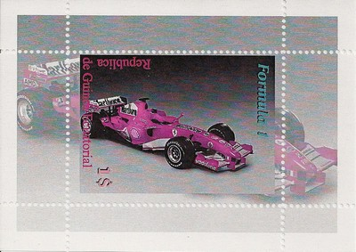 Issue date: Unknown A series of single value mini sheets showing F1 cars, including Ferrari, Williams, McLaren and Honda. 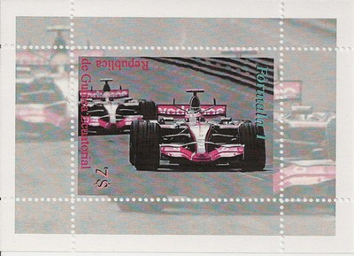 Issue date: Unknown A series of single value mini sheets showing F1 cars, including Ferrari, Williams, McLaren and Honda. 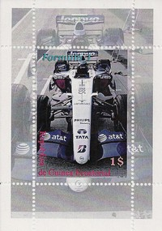 Issue date: Unknown A series of single value mini sheets showing F1 cars, including Ferrari, Williams, McLaren and Honda. 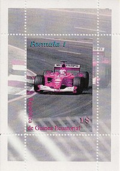 Issue date: Unknown A series of single value mini sheets showing F1 cars, including Ferrari, Williams, McLaren and Honda. 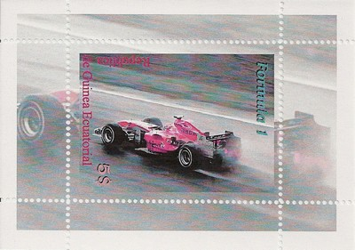 Issue date: Unknown A series of single value mini sheets showing F1 cars, including Ferrari, Williams, McLaren and Honda. 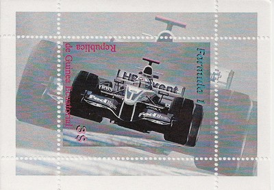 Issue date: Unknown A series of single value mini sheets showing F1 cars, including Ferrari, Williams, McLaren and Honda. |